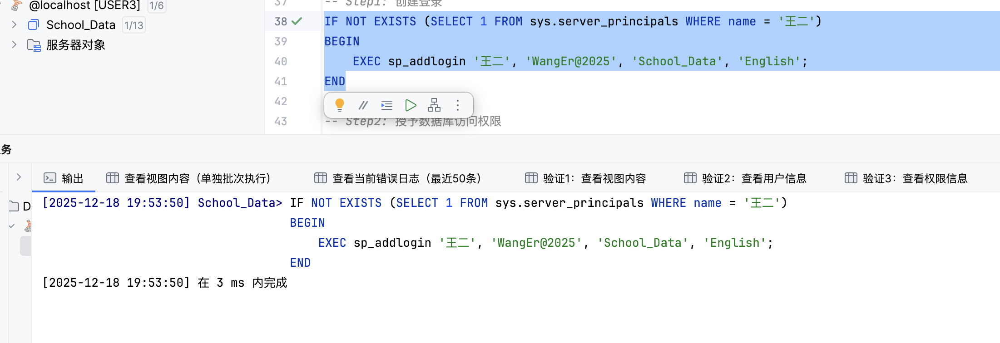
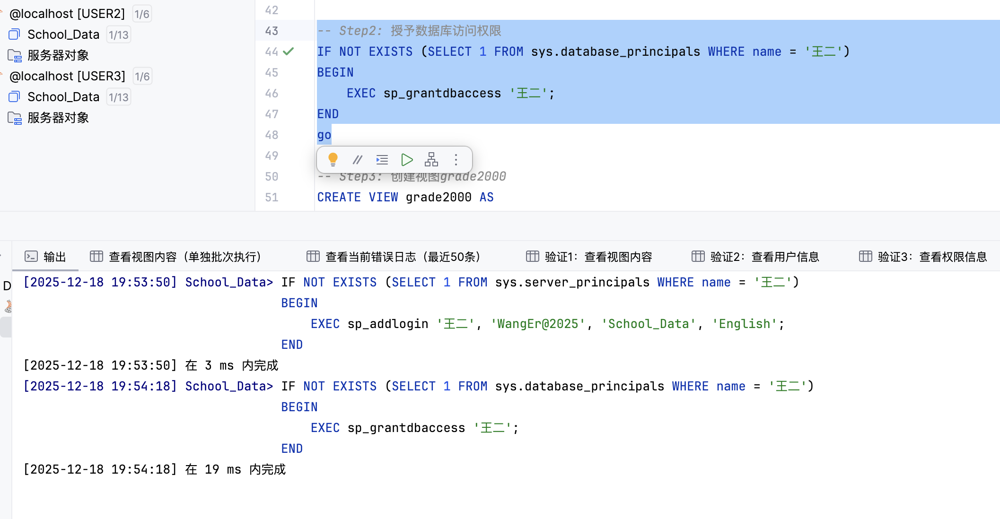
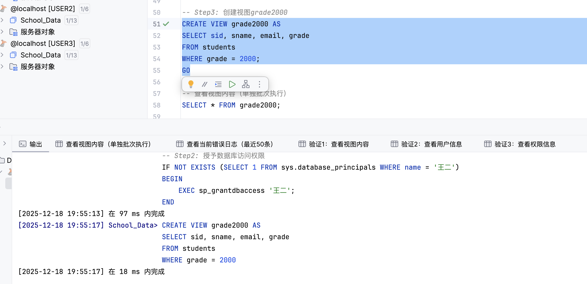
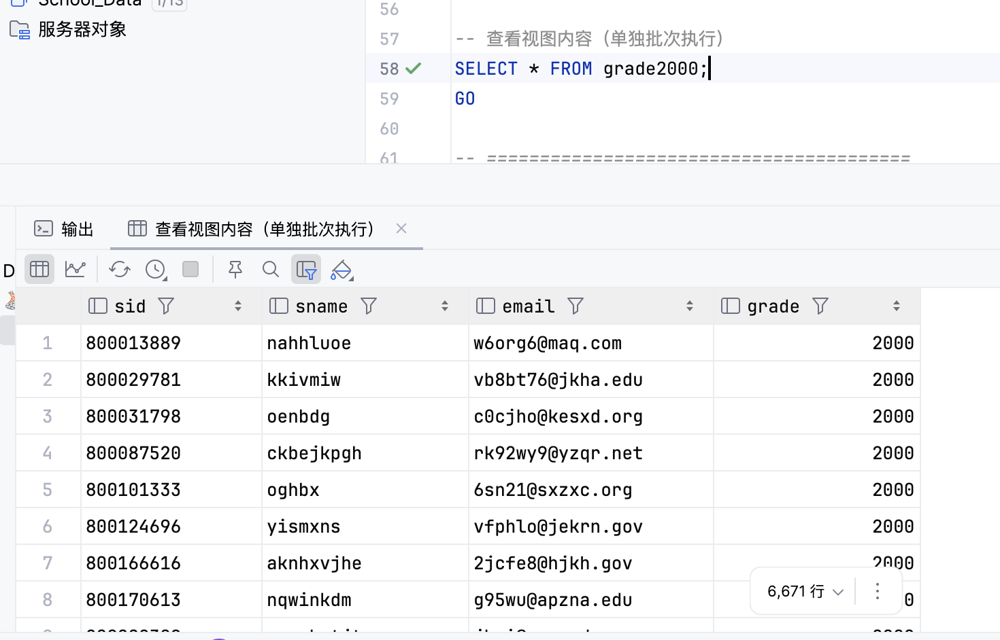
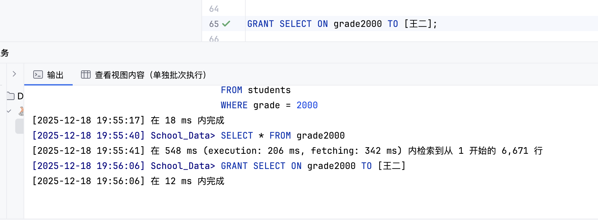
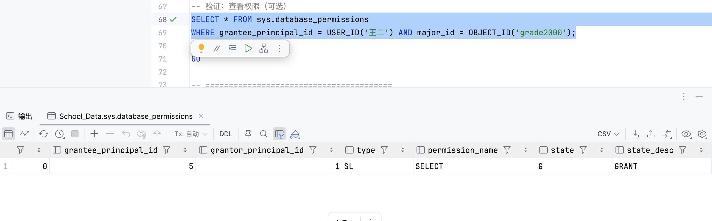
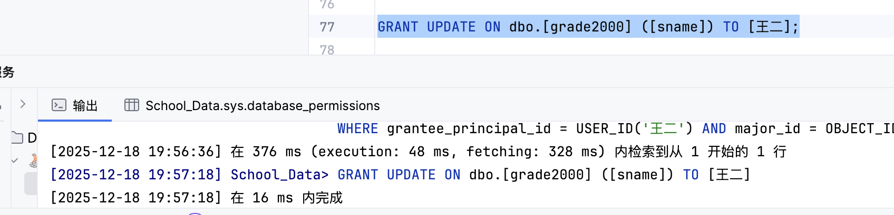
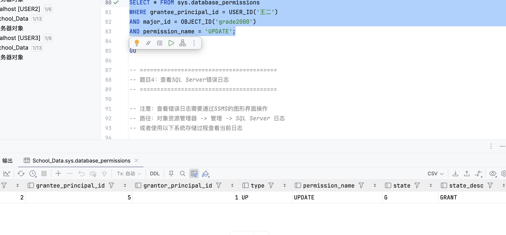
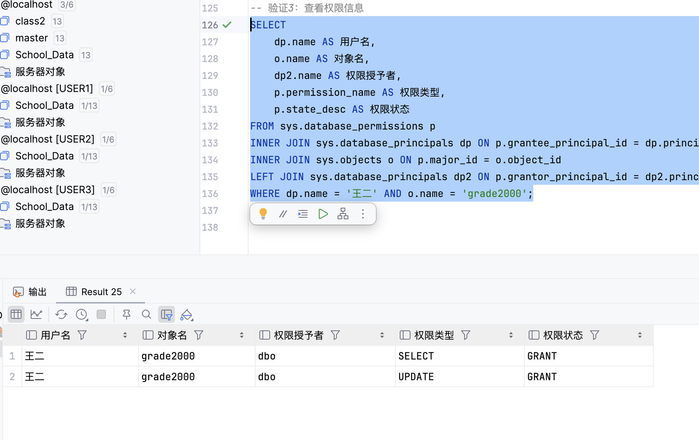
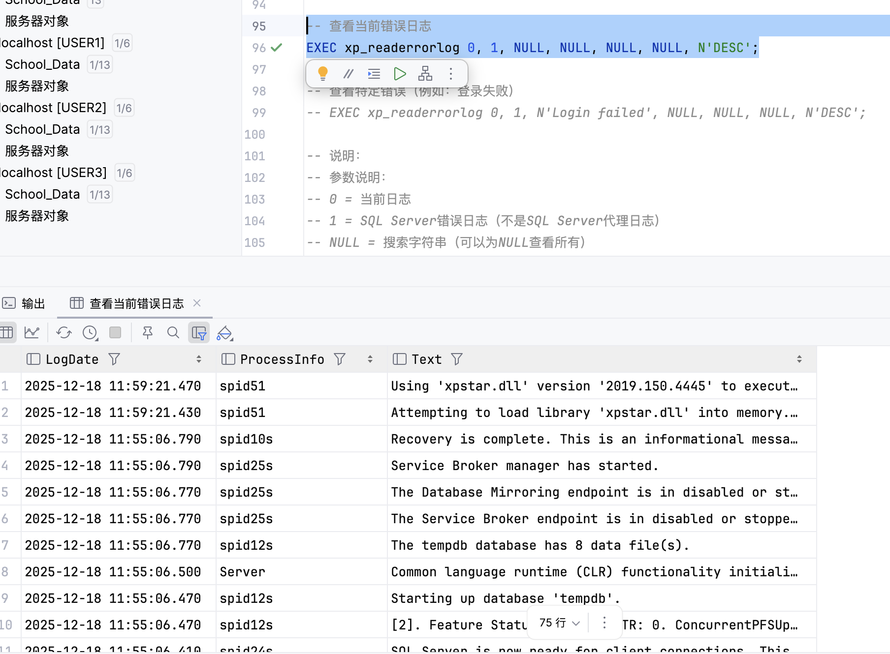

实验信息
- 实验名称: 用户管理与权限控制
- 实验日期: 2025-12-18
- 数据库: School_Data
- 实验目的: 学习在 SQL Server 中创建登录与数据库用户，通过视图实现细粒度访问控制，并掌握授予对象级和列级权限，以及通过错误日志进行系统诊断。
实验内容概述
本次实验主要包含以下内容：
- 在数据库 School_Data 中创建用户 王二，并创建视图 grade2000（筛选出年级为2000的学生）。
- 授予用户王二在视图 grade2000 上的 SELECT 权限。
- 授予用户王二在视图 grade2000 上对 sname 列的 UPDATE 权限，并验证修改效果。
- 使用系统存储过程 xp_readerrorlog 查看 SQL Server 错误日志。
题目1：创建用户王二并授予数据库访问权限
实验目的
在 SQL Server 中创建登录 王二，并在数据库 School_Data 中创建对应的数据库用户，为后续授权做准备。
实验步骤
1创建登录和数据库用户
USE School_Data;
GO
-- 创建登录（满足密码策略要求）
IF NOT EXISTS (SELECT 1 FROM sys.server_principals WHERE name = '王二')
BEGIN
EXEC sp_addlogin '王二', 'WangEr@2025', 'School_Data', 'English';
END
-- 授予数据库访问权限（创建数据库用户）
IF NOT EXISTS (SELECT 1 FROM sys.database_principals WHERE name = '王二')
BEGIN
EXEC sp_grantdbaccess '王二';
END

图1：在 School_Data 数据库中创建登录和数据库用户"王二"

图2：通过 sp_grantdbaccess 将登录"王二"映射为 School_Data 中的数据库用户
实验结果
成功创建登录和数据库用户"王二"，为后续在 School_Data 中授予权限做好了准备
题目2：创建视图 grade2000 并查看视图内容
实验目的
基于 students 表创建视图 grade2000，只显示年级为 2000 的学生信息，为后续的权限控制提供一个受限制的数据访问接口
实验步骤
1创建视图 grade2000
CREATE VIEW grade2000 AS
SELECT sid, sname, email, grade
FROM students
WHERE grade = 2000;

图3：在 School_Data 中成功创建视图 grade2000
2查看视图内容
SELECT * FROM grade2000;

图4：grade2000 视图返回的所有学生记录的 grade 均为 2000，共 6671 行
结果分析
- 视图作用：通过 WHERE 条件将 students 表中所有 grade=2000 的记录集中到 grade2000 视图中，后续只需对该视图进行授权
- 安全性：用户通过视图只能看到年级为2000的学生信息，无法访问 students 表的其他数据
题目3：授予王二在视图上的 SELECT 与列级 UPDATE 权限
实验目的
通过给视图授予权限，让用户王二可以：
- 查询 grade2000 视图中的学生信息（SELECT）
- 仅能修改 grade2000 视图中的 sname 列（列级 UPDATE），其他列保持只读
3.1 授予 SELECT 权限
1授予视图 SELECT 权限
GRANT SELECT ON grade2000 TO [王二];

图5：执行 GRANT SELECT ON grade2000 TO [王二]，命令成功完成
2验证 SELECT 权限
SELECT *
FROM sys.database_permissions
WHERE grantee_principal_id = USER_ID('王二')
AND major_id = OBJECT_ID('grade2000')
AND permission_name = 'SELECT';

图6：在 sys.database_permissions 中查询到王二在 grade2000 上的 SELECT 权限记录，state_desc 为 GRANT
3.2 授予列级 UPDATE 权限
3授予对 sname 列的 UPDATE 权限
GRANT UPDATE ON dbo.[grade2000] ([sname]) TO [王二];

图7：授予王二在 grade2000 视图中 sname 列的 UPDATE 权限，命令执行成功
4验证 UPDATE 权限并进行修改
-- 示例：以王二身份修改某位学生的姓名
UPDATE grade2000
SET sname = 'NewName'
WHERE sid = '8000xxxx';

图8：以王二身份执行 UPDATE grade2000 SET sname=...，操作成功，表明列级 UPDATE 权限已生效
3.3 综合查看权限信息
通过权限视图查看王二在 grade2000 上的所有权限：
SELECT
dp.name AS 用户名,
o.name AS 对象名,
dp2.name AS 权限授予者,
p.permission_name AS 权限类型,
p.state_desc AS 权限状态
FROM sys.database_permissions p
INNER JOIN sys.database_principals dp ON p.grantee_principal_id = dp.principal_id
INNER JOIN sys.objects o ON p.major_id = o.object_id
LEFT JOIN sys.database_principals dp2 ON p.grantor_principal_id = dp2.principal_id
WHERE dp.name = '王二'
AND o.name = 'grade2000';

图9：查询结果显示王二在 grade2000 上同时拥有 SELECT 和 UPDATE 两种权限，状态均为 GRANT
结果分析
- 对象级权限：通过 GRANT SELECT ON grade2000 TO 王二，使其可以读取视图中的所有行
- 列级权限：通过 GRANT UPDATE ON grade2000 (sname) TO 王二，只允许修改 sname 列，其他列保持只读
- 权限验证：结合 sys.database_permissions 查询和实际 UPDATE 操作，确认授权配置正确无误
题目4：查看 SQL Server 错误日志
实验目的
通过系统存储过程 xp_readerrorlog 查看 SQL Server 错误日志，了解日志结构和信息类型，掌握基本的故障诊断方法
实验步骤
1使用 xp_readerrorlog 查看日志
-- 查看当前错误日志（最近记录，按时间降序）
EXEC xp_readerrorlog 0, 1, NULL, NULL, NULL, NULL, N'DESC';

图10：使用 xp_readerrorlog 查询当前错误日志，结果包含 LogDate、ProcessInfo 和 Text 等字段
结果分析
- 错误日志内容：包括服务器启动信息、登录失败、配置变更等重要事件
- 字段含义：LogDate 表示时间戳，ProcessInfo 表示来源组件，Text 为详细说明
- 诊断价值：通过筛选关键字（如 "Login failed"）可以快速定位登录失败等问题
实验总结
主要收获
- 用户与登录管理：学会了使用 sp_addlogin 创建登录、sp_grantdbaccess 创建数据库用户的方法
- 视图与数据隔离：通过视图 grade2000 将 students 表中的部分数据抽象出来，实现了逻辑上的数据隔离
- 权限控制：理解了对象级权限（SELECT）与列级权限（UPDATE 某列）的区别和应用场景，并能通过系统视图验证授权结果
- 错误日志：学会使用 xp_readerrorlog 查看错误日志，为后续的运维和故障排查提供了工具支持
经验与思考
本次实验完整地演示了 SQL Server 中的权限管理流程，从用户创建、视图构建到权限授予和验证。 在实际工作中，应当遵循"最小权限原则"，优先通过视图和列级权限向应用程序暴露数据， 避免直接授予对底层表的完全访问权限。同时，利用错误日志和系统视图可以有效地监控权限配置和系统运行状态， 这有助于提升系统的安全性和可维护性。